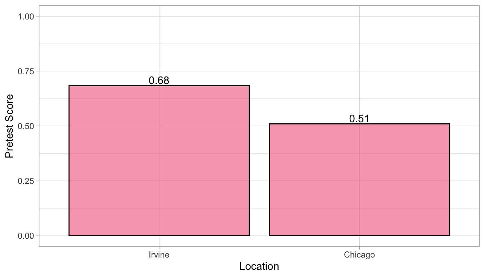
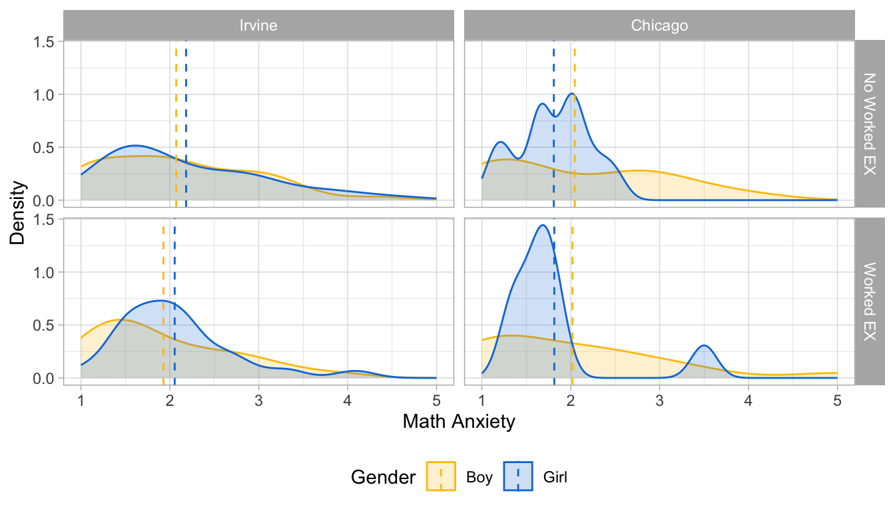

Warning: Using an external vector in selections was deprecated in tidyselect 1.1.0.
ℹ Please use `all_of()` or `any_of()` instead.
# Was:
data %>% select(tma_lst)
# Now:
data %>% select(all_of(tma_lst))
See <https://tidyselect.r-lib.org/reference/faq-external-vector.html>.
# Get rid of row that has NA values in Condition and/or Sexdf1 <- df1 %>%filter(Condition ==1| Condition ==2)df1 <- df1 %>%filter(!is.na(Sex))df1$Condition[df1$Condition ==2] <-0# Assign 0 for "boy" and 1 for "girl"df1$Sex[df1$Sex ==1] <-0df1$Sex[df1$Sex ==2] <-1# Make sure variable is categoricaldf1$chicago <-as.factor(df1$chicago)df1$Sex <-as.factor(df1$Sex)df1$nonwhite <-as.factor(df1$nonwhite)df1$Condition <-as.factor(df1$Condition)
3 Checking Pretest Score Difference
df1 %>%group_by(chicago) %>%summarize(pre_avg =mean(pretest, na.rm =TRUE)) %>%ggplot(aes(x = chicago, y = pre_avg))+geom_bar(position ="dodge", stat ="identity", color ="black",fill ="#ef476f", alpha =0.5) +geom_text(aes(label=round(pre_avg,2)), position=position_dodge(width=0.9), vjust=-0.25) +ylim(0,1) +labs(x ="Location", y ="Pretest Score") +scale_x_discrete(labels=c("Irvine", "Chicago")) +theme_light()

In the previous analysis, we saw that more student in Irvine already knew how to use ratio tactics before the study than students in Chicago. We want to check if the pretest score difference is significant across the sites by using student’s t-test:
t.test(pretest ~ chicago, data = df1)
Welch Two Sample t-test
data: pretest by chicago
t = 2.2026, df = 76.3, p-value = 0.03064
alternative hypothesis: true difference in means between group 0 and group 1 is not equal to 0
95 percent confidence interval:
0.01665668 0.33096711
sample estimates:
mean in group 0 mean in group 1
0.6836158 0.5098039
The result shows that the difference is significant (p-value = 0.03). Since both sites are significantly different, we will treat each site as separate data.
# labels cond <-c("No Worked EX", "Worked EX")names(cond) <-c(0, 1)location <-c("Irvine", "Chicago")names(location) <-c(0, 1)# TMA mean by site, condition, and gendermu <- df1 %>%group_by(chicago, Condition, Sex) %>%summarize(mean =mean(TMA_avg))
`summarise()` has grouped output by 'chicago', 'Condition'. You can override
using the `.groups` argument.
# math anxiety density plotdf1 %>%ggplot(aes(x = TMA_avg, fill = Sex,color = Sex)) +geom_density(alpha =0.2) +theme_light() +geom_vline(data=mu, aes(xintercept=mean, color=Sex),linetype="dashed") +facet_grid(rows =vars(Condition),cols =vars(chicago),labeller =labeller(Condition = cond,chicago = location)) +scale_fill_manual(values =c("#FFC20A", "#0C7BDC"), labels =c("Boy", "Girl")) +scale_color_manual(values =c("#FFC20A", "#0C7BDC"), labels =c("Boy", "Girl")) +labs(x ="Math Anxiety", y ="Density",fill ="Gender", color ="Gender") +theme(legend.position="bottom")

We see from the figure that in Irvine schools, girls seemed to have a higher average math anxiety than boys in both condition. However, in Chicago schools, boys seemed to have a higher math anxiety than girls in both condition.
Girls seemed to have a higher math anxiety compared to boys overall. Check if the difference is significant in each site by using ANOVA test:
4.1 Chicago Data
m1_c <-aov(TMA_avg ~ Condition + Sex + Condition*Sex, data = df_c)summary(m1_c)
Df Sum Sq Mean Sq F value Pr(>F)
Condition 1 0.80 0.7978 1.288 0.258
Sex 1 0.61 0.6106 0.986 0.322
Condition:Sex 1 0.00 0.0024 0.004 0.950
Residuals 174 107.79 0.6195
No significant difference between gender on learning achievement and math anxiety was found by gender.
4.2 Irvine Data
m1_i <-aov(TMA_avg ~ Condition + Sex + Condition*Sex, data = df_i)summary(m1_i)
Df Sum Sq Mean Sq F value Pr(>F)
Condition 1 0.02 0.0160 0.022 0.882
Sex 1 0.59 0.5868 0.812 0.372
Condition:Sex 1 0.00 0.0029 0.004 0.950
Residuals 47 33.96 0.7225
No significant difference between gender on learning achievement and math anxiety was found by gender.
5 Multiple Linear Regression
We will be fitting a model to our data: one for predicting Del_OverallAcc and Understand_avg. The model uses following predictors:
SI_avg (p = 0.0154): While controlling for other predictors, every one unit increse in SI_avg results in 0.04 increase in Del_OverallAcc
TMA_avg:Condition (p = 0.0133): Students who received worked examples, while controlling for other predictors, had increase in Del_OverallAcc by 0.07 for every 1 unit increase in TMA_avg, while students who received worked examples had decrease in Del_OverallAcc.
5.1.2 Irvine Data
# Fit modelm2_i <- Del_OverallAcc ~ Condition + Sex + pretest + TMA_avg + MW_day1_avg + MW_day2_avg + SI_avg + Condition*Sex + Condition*TMA_avg + Condition*TMA_avg*Sexfit2_i <-lm(m2_i, data = df_i)summary(fit2_i)
In both sites, we failed to reject the null. That is, we did not find enough evidence to prove that gender played significant effect on math anxiety and learning achievements.
5.2 Perceived Understanding
# Check if there's any participant missing understanding datadf1 %>%count(is.na(Understand_avg))
# A tibble: 2 × 2
`is.na(Understand_avg)` n
<lgl> <int>
1 FALSE 227
2 TRUE 2
2 participants were missing Understand_avg data (row #56 and #198)
# Fill out missing understanding avg data with the group averageunderstand_avg1 <- df1 %>%filter(Condition ==1& Sex ==0& chicago ==0) %>%summarize(mean_understand =mean(Understand_avg, na.rm =TRUE))understand_avg2 <- df1 %>%filter(Condition ==0& Sex ==0& chicago ==0) %>%summarize(mean_understand =mean(Understand_avg, na.rm =TRUE))# assign imputed valuedf1[56, 17] = understand_avg1df1[198, 17] = understand_avg1# update chicago and irvine datadf_c <- df1 %>%filter(chicago ==1)df_i <- df1 %>%filter(chicago ==0)
Every participant now has a Understand_avg data, now we fit the model to our data to predict Understand_avg:
5.2.1 Chicago Data
# Fit modelm3_c <- Understand_avg ~ Condition + Sex + pretest + TMA_avg + MW_day1_avg + MW_day2_avg + SI_avg + Condition*Sex + Condition*TMA_avg + Condition*TMA_avg*Sexfit3_c <-lm(m3_c, data = df_c)summary(fit3_c)
MW_day1_avg (p = .0220): While controlling for other predictors, every 1 unit of increase in MW_day1_avg decreases perceived understanding by 5.1670.
SI_avg (p = 3.55e-05): While controlling for other predictors, every 1 unit of increase in SI_avg increases perceived understanding by 7.2430.
# Display result as a table
5.3 Results
No significant effect was found by gender on either math anxiety or learning achievements
However, we saw that worked examples were overall effective in reducing the effect of math anxiety on posttest accuracy scores, regardless of gender but only in Chicago.
No significant effect was found by math anxiety on perceived understanding. Instead, mind wandering and situational interest were two dominant significant predictors, but only in Irvine.
Students in Chicago significantly performed worst in learning achievements
6 Path Analysis
We constructed structural equation models to model learning achievements: Del_OverallAcc and Understand_avg. We fit the model for each site data (df_c and df_i), and chi-square test was used to determine if the free model was significantly different from the constrined model.
# free modelfit_ca <-sem(m_acc, data = df_c, group ="Sex")# constrained modelfit_ca_c <-sem(m_acc, data = df_c, group ="Sex",group.equal =c("intercepts", "regressions"))
# check if the constrained and free models are significantly diffanova(fit_ca, fit_ca_c)
No significant difference between the free and constrained models for Chicago in modeling Del_OverallAcc.
6.1.2 Irvine Data
# free modelfit_ia <-sem(m_acc, data = df_i, group ="Sex")# constrained modelfit_ia_c <-sem(m_acc, data = df_i, group ="Sex",group.equal =c("intercepts", "regressions"))
summary(fit_ia)
lavaan 0.6.15 ended normally after 65 iterations
Estimator ML
Optimization method NLMINB
Number of model parameters 20
Number of observations per group: Used Total
0 69 72
1 104 106
Model Test User Model:
Test statistic 5.818
Degrees of freedom 6
P-value (Chi-square) 0.444
Test statistic for each group:
0 2.992
1 2.826
Parameter Estimates:
Standard errors Standard
Information Expected
Information saturated (h1) model Structured
Group 1 [0]:
Regressions:
Estimate Std.Err z-value P(>|z|)
TMA_avg ~
MW_day1_avg 0.366 0.163 2.244 0.025
MW_day2_avg -0.261 0.157 -1.669 0.095
SI_avg -0.126 0.101 -1.252 0.211
Condition -0.042 0.175 -0.238 0.812
Del_OverallAcc ~
TMA_avg 0.014 0.033 0.432 0.666
Condition 0.045 0.051 0.876 0.381
Intercepts:
Estimate Std.Err z-value P(>|z|)
.TMA_avg 2.136 0.543 3.936 0.000
.Del_OverallAcc 0.595 0.108 5.484 0.000
Variances:
Estimate Std.Err z-value P(>|z|)
.TMA_avg 0.501 0.085 5.874 0.000
.Del_OverallAcc 0.044 0.008 5.874 0.000
Group 2 [1]:
Regressions:
Estimate Std.Err z-value P(>|z|)
TMA_avg ~
MW_day1_avg 0.069 0.093 0.744 0.457
MW_day2_avg 0.367 0.089 4.104 0.000
SI_avg -0.016 0.077 -0.214 0.830
Condition 0.010 0.128 0.081 0.935
Del_OverallAcc ~
TMA_avg -0.078 0.025 -3.161 0.002
Condition -0.033 0.037 -0.895 0.371
Intercepts:
Estimate Std.Err z-value P(>|z|)
.TMA_avg 1.325 0.437 3.030 0.002
.Del_OverallAcc 0.871 0.081 10.743 0.000
Variances:
Estimate Std.Err z-value P(>|z|)
.TMA_avg 0.407 0.056 7.211 0.000
.Del_OverallAcc 0.035 0.005 7.211 0.000
# check if the constrained and free models are significantly diffanova(fit_ia, fit_ia_c)
Chi-squared difference test showed a significant result (p = 0.004444), which indicated that free model and constrained models are significantly different. Now, we need to see which predictors are different.
We find that the models are still significantly different, implying that the path between TMA_avg -> Del_OverallAcc should not be constrained and instead that it should be left to vary among gender.
# free modelfit_cu <-sem(m_und, data = df_c, group ="Sex")# constrained modelfit_cu_c <-sem(m_und, data = df_c, group ="Sex",group.equal =c("intercepts", "regressions"))
# check if the constrained and free models are significantly diffanova(fit_cu, fit_cu_c)
No significant difference between the free and constrained models for Chicago in modeling Understand_avg.
6.2.2 Irvine Data
# free modelfit_iu <-sem(m_und, data = df_i, group ="Sex")# constrained modelfit_iu_c <-sem(m_und, data = df_i, group ="Sex",group.equal =c("intercepts", "regressions"))
# check if the constrained and free models are significantly diffanova(fit_iu, fit_iu_c)
Chi-squared difference test showed a significant result (p = 0.004444), which indicated that free model and constrained models are significantly different. Now, we need to see which predictors are different.
In this case, there is not a significant difference between the two models (P = 0.659), implying that there is no difference in the fit of the constrained model and the unconstrained model and that this constraint is valid.